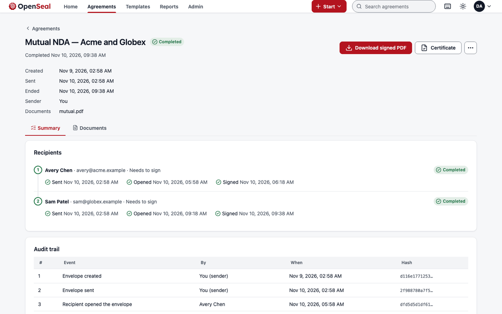
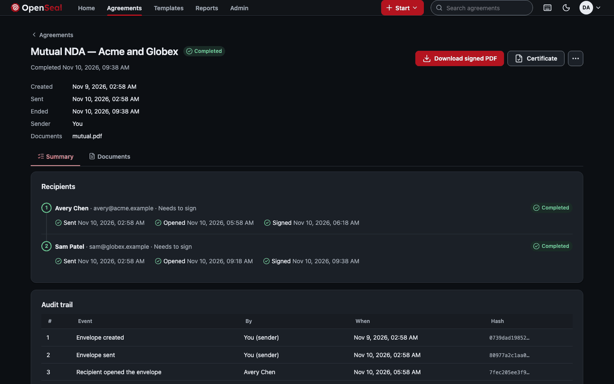

Sending your first envelope
An envelope is one or more documents, the people who act on them, and the fields each of them fills. You prepare it in four steps: documents, recipients, fields, then review and send.
Start an envelope
From Home, drop a PDF on the page or choose Start and then Send for signature. You can add several documents; they are sent, signed and sealed together, in the order shown.
Every upload is treated as hostile. The server reads it with strict limits, then rewrites it without JavaScript, actions, embedded files and XFA forms before anyone sees it. If something was removed, the admission report says what. Files up to 50 MB are accepted.


Add recipients
Each recipient has a name, an email address, a type and a routing order.
- Signers fill fields and sign.
- Carbon copies receive the completed documents and take no action.
- Routing order decides who goes when: recipients with order 1 are invited first, order 2 when every order-1 recipient has finished, and so on. Give two signers the same order to let them sign in parallel.
For extra assurance you can ask a recipient for an access code you share with them separately; the signing link alone is then not enough.
Place fields
The editor puts the document in the middle of the screen. Choose whom you are placing fields for, then drag a field type onto the page, or press Enter to drop it on the page in view. Each recipient's fields have their own colour.


Field types in the editor today: signature, initials, date signed, name, email, text and checkbox. Arrow keys move the selected field; Alt with the arrows resizes it; Shift-click selects several. The properties panel on the right sets the recipient, a label and whether the field is required. Undo and redo are in the top bar, and the draft saves as you go.
Every signer needs at least one signature field. The engine checks the envelope before it can be sent: every field must be on a page and belong to a recipient.
Review and send
The last step shows the envelope as the recipients will get it: the subject and message of the email, the recipients in order, and the documents. Choose Send. From that moment the documents are fixed: their hashes are recorded in the audit trail, and the first recipients are emailed a signing link.
Follow it
The Agreements list shows every envelope with its status: draft, sent, completed, declined, voided or expired. Open one to see who has acted, its documents and its audit trail.


From an envelope you can resend invitations, correct a sent envelope (all changes or none), or void it with a reason. When the last signer finishes, the worker seals the documents and the sealed PDF and its certificate of completion can be downloaded from the envelope.
The same through the API
One call creates and sends an envelope. Field positions are in points on the page as displayed, measured from its top-left corner.
curl https://sign.example.com/api/v1/envelopes \
-H "Authorization: Bearer $OPENSEAL_KEY" \
-H "Idempotency-Key: 6f1d2a4e-first-envelope" \
-H "Content-Type: application/json" \
-d '{
"subject": "Services agreement",
"status": "sent",
"documents": [{"name": "msa.pdf", "content_base64": "JVBERi0xLjcK..."}],
"recipients": [{"ref": "s1", "type": "signer", "name": "Ilse Marten",
"email": "ilse@halden.example", "routing_order": 1}],
"fields": [{"recipient": "s1", "document": 0, "type": "signature",
"page": 1, "x": 72, "y": 600, "width": 180, "height": 40, "required": true}]
}'See createEnvelope in the API reference for every option, including reminders, expiry and the seal profile.